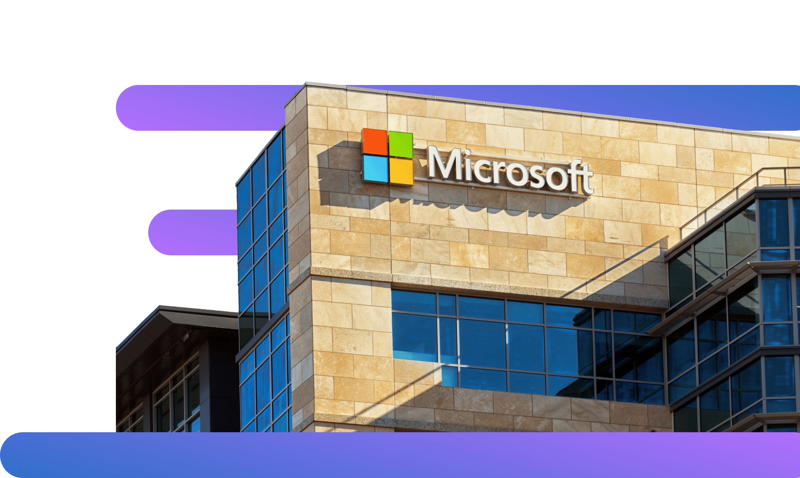

VScode by
Microsoft
Visual Studio Code – один из продуктов компании Microsoft – одной из крупнейших транснациональных компаний по производству проприетарного программного обеспечения для различного рода вычислительной техники — персональных компьютеров, игровых приставок, КПК, мобильных телефонов и прочего

Продукты компании Microsoft
Windows
Самая распространённая ОС на рынке, установлена на более чем 83% всех персональных компьютеров и рабочих станций
Узнать большеXbox
Серия игровых консолей, конкурирующая с линейкой Sony Playstation. Под брэндом также выпускается стриминговый сервис и игры от Xbox Game Studios
Узнать большеMicrosoft Surface
Серия утройств, так называемых планшетных компьютеров – многофункциональных трансформирующихся устройств
Узнать большеGitHub
Самый популярный хостинг открытого исходного кода. К слову, этот сайт запущен на сервере GitHub Pages – ещё одним продуктом компании GitHub
Узнать большеCоциальная сеть для поиска и установления деловых контактов. В LinkedIn зарегистрировано более 500 млн пользователей, представляющих 150 отраслей бизнеса
Узнать больше